k-Day 149｜獨庫公路（四）
在烏魯木齊待了一週，主要在等待裝備到貨。淘寶運送到新疆大約需要5-7天，若是沒辦法提前決定住宿地點，可以先填寫菜鳥驛站的地址，代收後還能放幾天，就不需要在一個城市等那麼久。
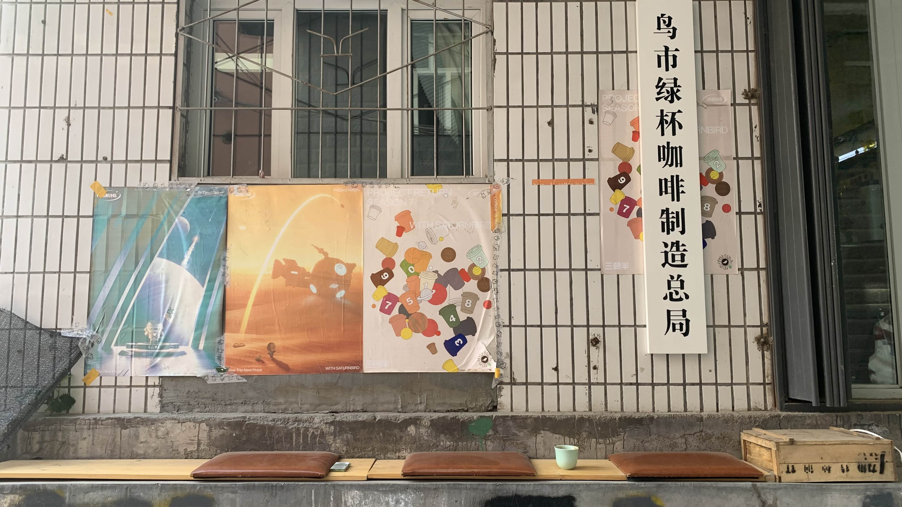
雖然待在城裡也沒閒著，第一天先找了一間咖啡廳上傳日誌。
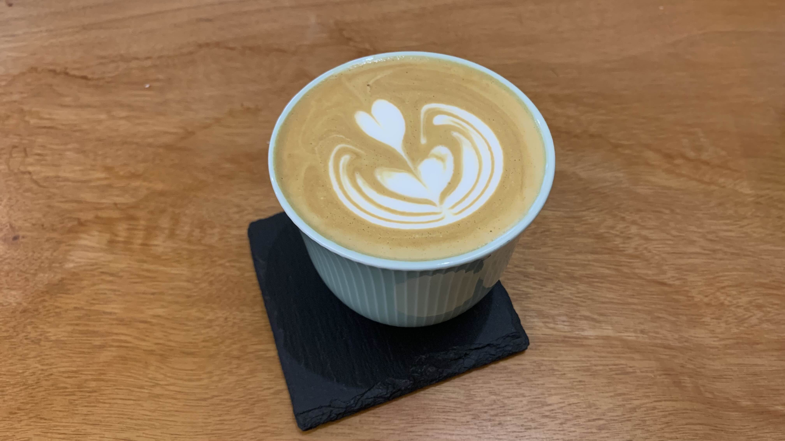
可惜進店後因為沒有微信支付，很快被發現是台灣人。喝咖啡的過程聽著中國將如何武統台灣的故事，就著麼毫無進度的離開。
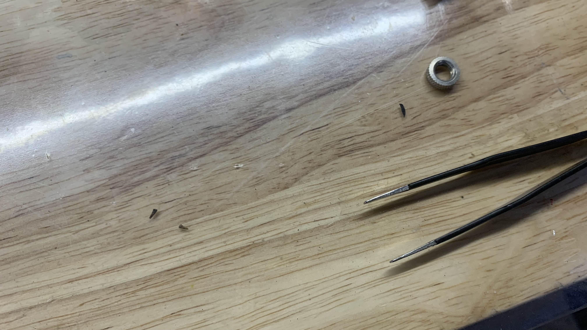
帶著二十三號到附近的美利達換輪胎。內外胎在進城那天同時爆胎，技師找到兇手，是三根植物硬化的小刺。
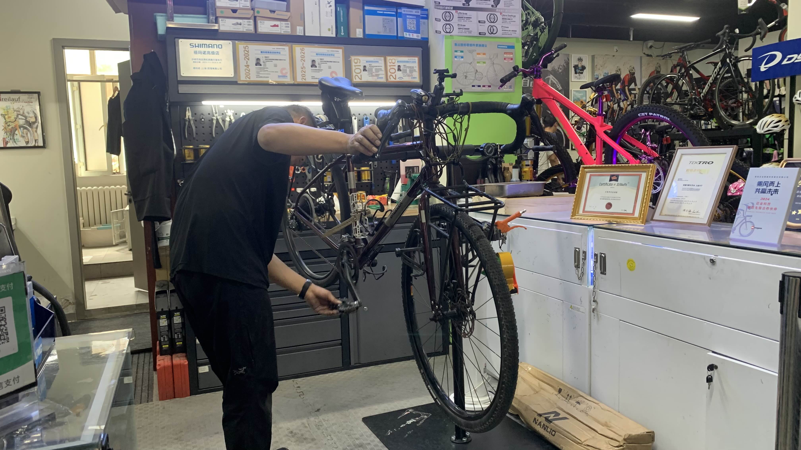
這間店不幫忙補胎，因此技師直接換上新的內胎。看隔壁還有一間Trek，應該是同一個老闆，因為赤峰的經驗，對於中國Trek分店的服務不太安心。不過就是換內胎，應該也不至於出什麼意外。順便詢問變速問題，技師說因為線材外露，這種車騎久了就是會卡。
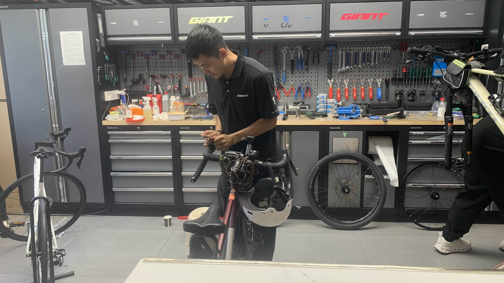
決定騎到捷安特，比剛才的美利達看來專業，態度也和善許多。
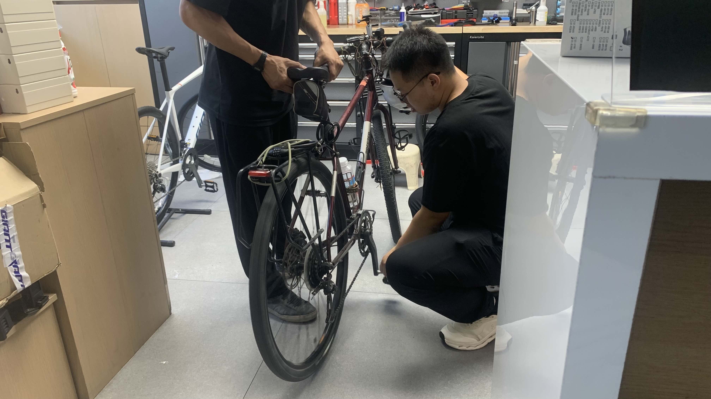
一問之下竟然連把手套都有，技師幫忙換上新的，順便調整了跳齒的變速。不到朝陽老闆設定的滑順程度，但是也已經趨近自然狀態。
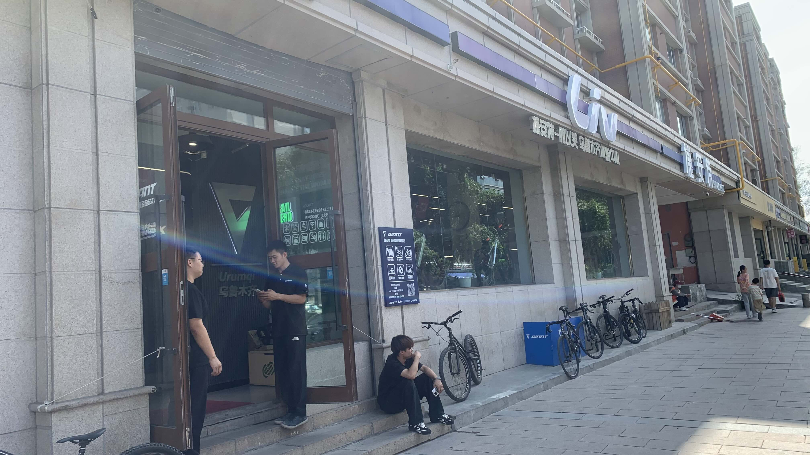
若有人到了烏魯木齊需要修車，推薦到這間捷安特。
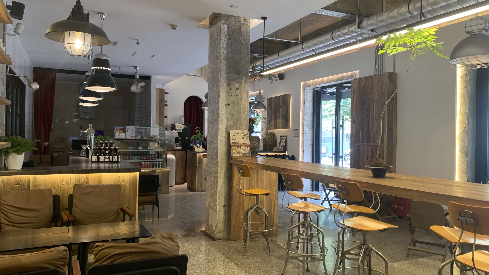
第二天找了另一家咖啡廳「雪鴞」，整間店的氛圍相當安靜，老闆沒問我是哪裡人，相當好的預感。
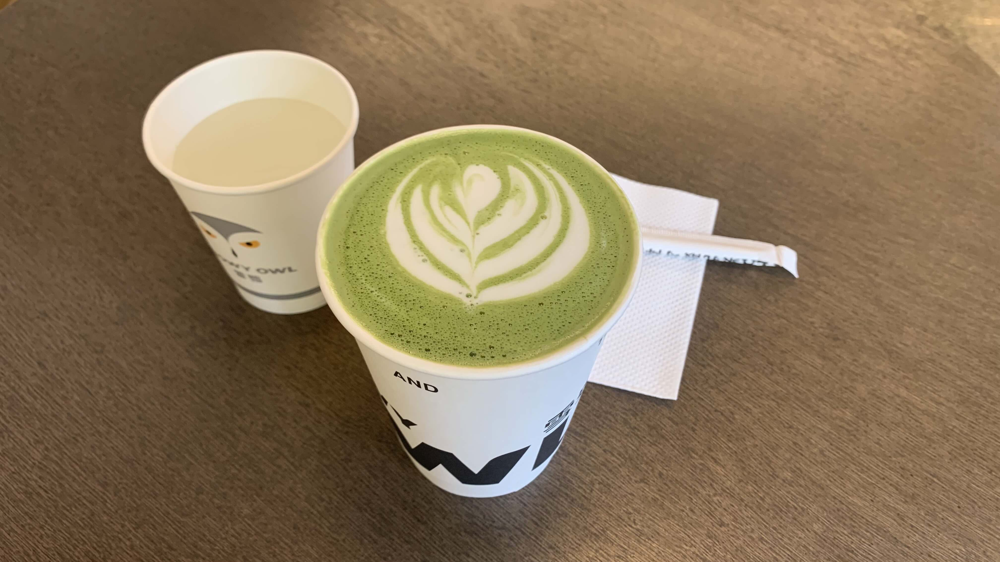
抹茶拿鐵不錯，座椅下方有插頭可以充電。
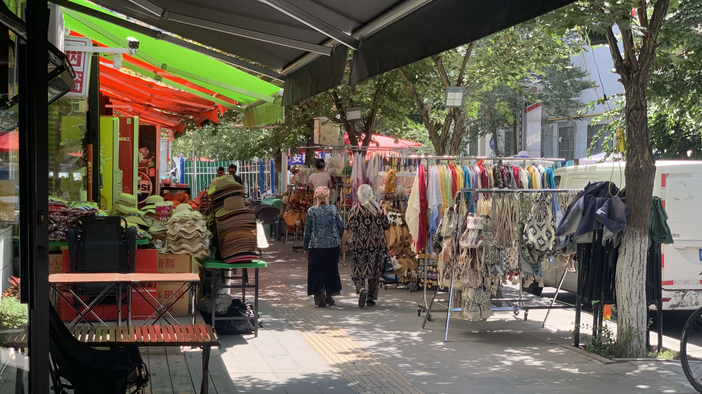
新疆的街道很乾淨呢，完全沒有中國大城市特有的粘膩人行道。
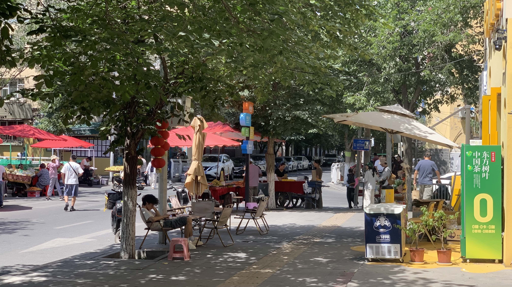
路上經常看到坐在樹蔭下乘涼的人。炙熱的太陽曬在賣水果的攤車上，整條街聞起來都是甜得令人感到幸福的桃子味。
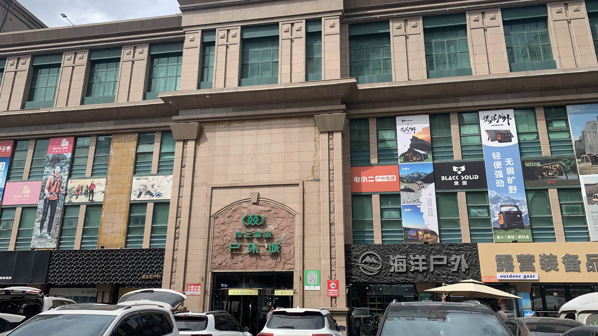
傍晚到「地王戶外城」找帳篷補片和瓦斯罐，在網上查到這地方，聽說所有的戶外用品都能在這裡買齊。不太確定所謂的「所有」是什麼意思，繞了好久只買到兩瓶氣罐。此處似乎只有中國本土的品牌，其它散落在攤販角落的零星國際品牌昂貴且不齊全。明天還是到迪卡儂找找希望吧。
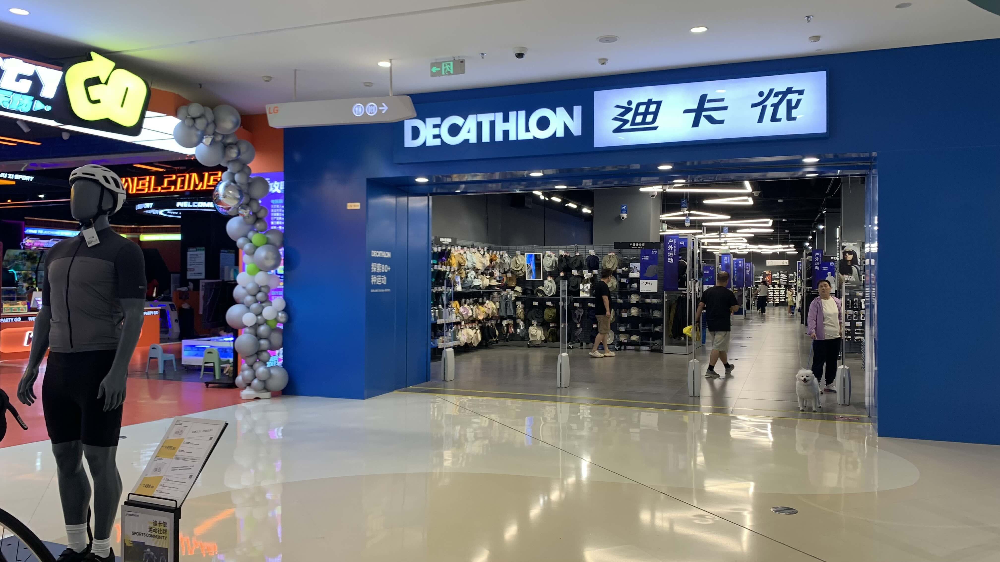
第三天搭車到當地的迪卡儂補貨。最重要的還是外套的防水噴霧和戶外服飾洗衣液。針對熱天也買了短褲、涼鞋、遮陽帽和袖套，兩週份量的蛋白粉、能量膠、鹽丸，劣化的寶特瓶和漏水的保溫壺也換成新的，提著一整袋裝備回家。
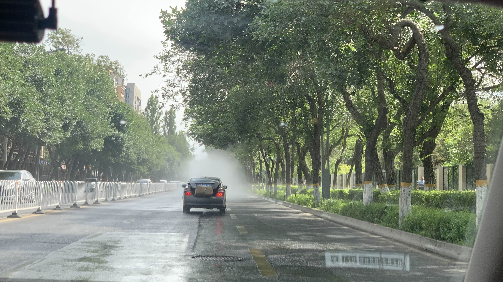
計程車司機說路邊的矮灌木叢都是為了習主席參訪，連夜趕工找了一批人種上的，工錢倒是欠著沒給。
晚上回到旅社，這幾天有兩名中年男子不斷騷繞女性。昨天硬是想拉同房的白俄羅斯妹妹跟一群男人去酒吧，我和前台在旁阻止後，其中一名自稱來自石河子的修飛機中年男子怒吼離去；另一名自稱曾經學藝術，老家山東，常住喀什，奶奶是烏蘭巴托人，所以可以叫他山東人，也可以說他是喀什人，也可以說他是蒙古人，而且常常出國的中年男子則開始向其他人散佈我是個看不起中國人的台獨份子。
由於陽台屬於開放空間，我坐到哪該名男子就跟到哪，期間被威脅如下：
「要不是中國人脾氣好，我現在就可以揍你」、「你怕啦？你要是找事，我可以拿把刀就殺了你。」
隨後轉頭跟其他住客說：「像這種找事的，就得讓他付出代價，就像台灣，他要找事，早晚會被打下來。」
晚上該男子尾隨白俄羅斯妹妹進入女生寢室，被前台發現後不斷宣稱自己只是進去尿尿。
石河子男人則在我報警後對我說：這只是「文化不一樣」，要我「入鄉隨俗，也別太介意」。
兩人隨後移步到陽台對著對面旅館的窗戶說：「來來，我們看一下窗戶的風景。」、「我們算偷窺嗎？」、「如果按台灣人的說法來說是偷窺嘛，但是在我們大陸這叫什麼？他打開（窗簾）嘛，他願意讓我們看，願意看。」
相當遺憾，警察到場後表示無法處理，並提醒我若繼續住在這裡覺得有危險，可以今天就搬走。
警察走後，民宿裡的其他女性和我說中國幾億人裡面多的是這種男性，只要女生拒絕被騷擾就會顏面受損找人毆打女性，尤其是這種內地來新疆的。
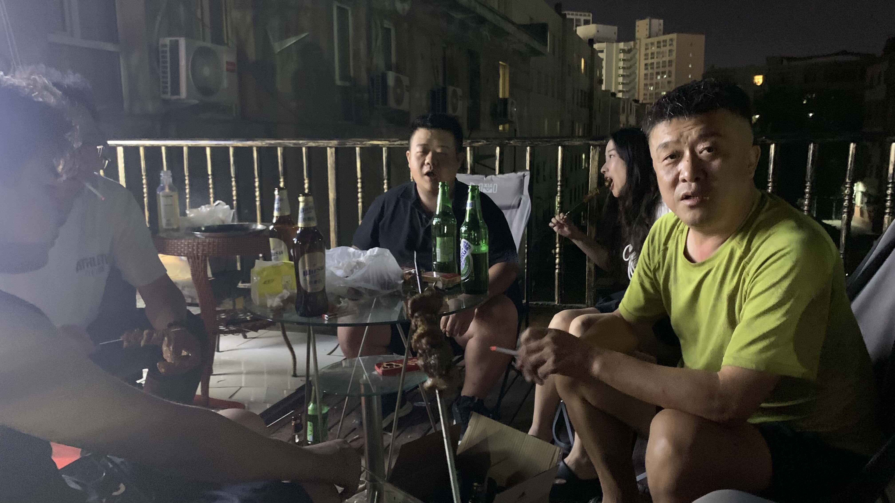
第四天晚上，老闆和重機騎友們在陽台烤肉，邀請我一起吃，獲得接下來的路線建議。聽說有一條從獨山子到庫車的獨庫公路可以翻越天山山脈，地貌多變，且「一條路可以看到四季」，那麼就放棄直接南下的沙漠公路，往西繞一些路吧。
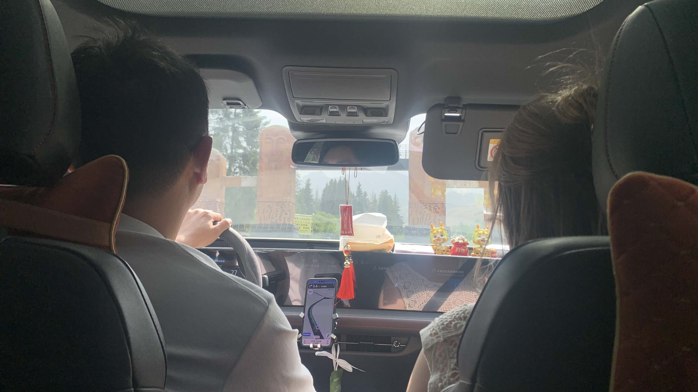
第五天早上起床，昨晚一起吃烤肉的東北女生和男友開車載我去南山，據說是烏魯木齊本地人的後花園。
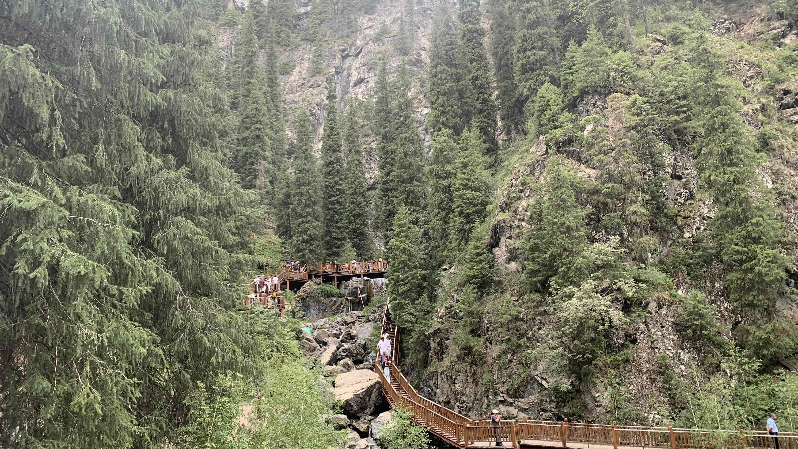
現場跟阿里山九成像，和他們說我進城時就感覺烏魯木齊和台北有些類似，距離這麼遠，怎麼會那麼相似呢？
晚上和他們去洗浴中心搓澡，此處的搓澡文化與東北不同，用的是毛巾而非澡巾。雖然搓得乾淨，實際上沒感覺太大的差別，還是東北大澡堂接地氣的文化比較適合我。
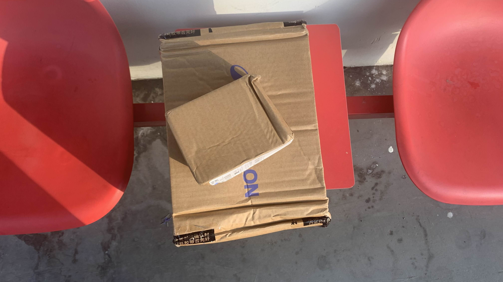
第六天淘寶終於到貨了。
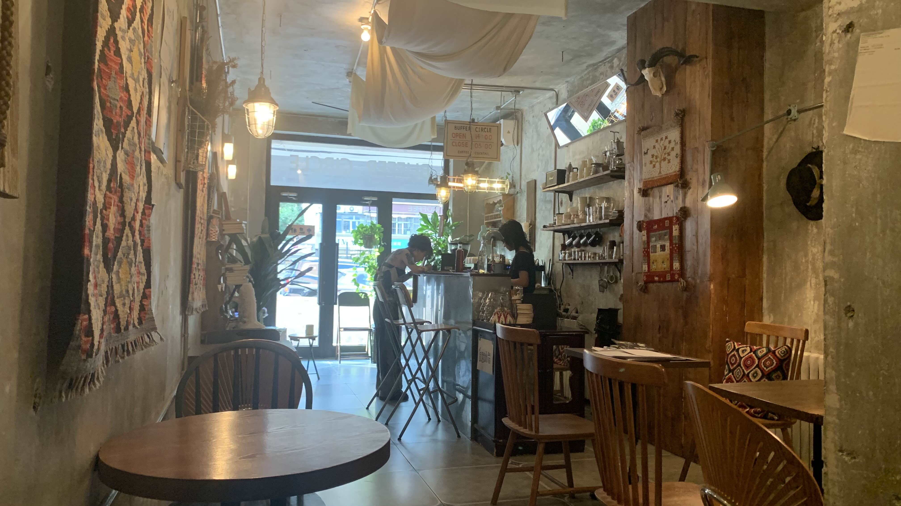
出門取貨順便又嘗試了一間咖啡，還是普普通通。
很想念RUFOUS COFFEE。在一杯拿鐵湊近鼻腔時隨著恰當的溫度上升的香氣，細緻綿密的奶泡、完美融合的牛奶與咖啡，入口後滑順的口感，以及最後留在口腔裡的堅果味道，幾年前因為疫情回到台灣的精神斷裂感因為手中的一杯咖啡獲得救贖。
明天要出發了，買的東西有點多，離開前到車店再買個前叉包吧。已經不是背著大背包騎車的天氣了。
今日花費： 早餐 16.5、7、蜜雪冰城 8、飲料 16.5、晚餐 47、住宿 114（2晚）元